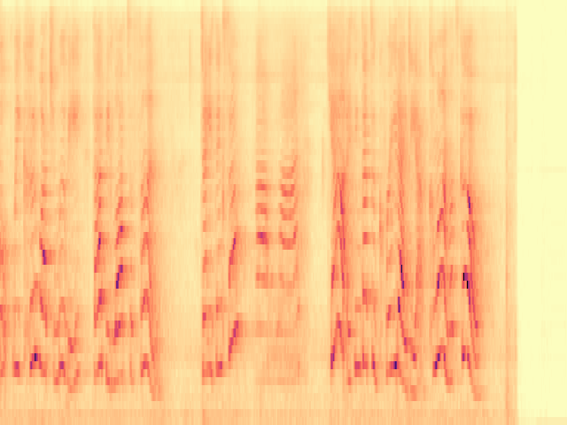

To the best of our knowledge, we propose the first diffusion model-based framework for audio semantic communication.
We design a reverse sampling procedure to perform multiple restorations at the same time, such as denoising and inpainting even in the case of highly degraded channel conditions.
We show the effectiveness of the proposed framework in real-world scenarios, including both speeches and sounds proving its superiority with respect to state-of-the-art comparisons.
Abstract
Directly sending audio signals from a transmitter to a receiver across a noisy channel may absorb consistent bandwidth and be prone to errors when trying to recover the transmitted bits. On the contrary, the recent semantic communication approach proposes to send the semantics and then regenerate semantically consistent content at the receiver without exactly recovering the bitstream. In this work, we propose a generative audio semantic communication framework that faces the communication problem as an inverse problem, therefore being robust to different corruptions. Our method transmits lower-dimensional representations of the audio signal and of the associated semantics to the receiver, which generates the corresponding signal with a particular focus on its meaning (i.e., the semantics) thanks to the conditional diffusion model at its core. During the generation process, the diffusion model restores the received information from multiple degradations at the same time including corruption noise and missing parts caused by the transmission over the noisy channel. We show that our framework outperforms competitors in a real-world scenario and with different channel conditions.
Figure 1. Results of the proposed framework on the denoising and inpainting tasks performed on low-dimensional representations of audio signals and semantics corrupted by a communication channel.
Examples
Here we propose some examplesto appreciate the results obtained by our method. Examples are organized as follows: first you can listen to the trasmitted (original) signal - also representing our target - and the received signal which is corrupted from the communication channel. Next, the comparison of reconstructions made by three methods, including ours, is presented.
In addition, we consider two distinct cases: the first in which both the caption embeddings and lower-dimensional representations of the audio signal are subjected to noise (denoising task); the second in which the caption embeddings are subjected to noise and the audio embeddings have a missing portion (denoising + inpainting task).
By clicking on the respective buttons, it is also possible to hear the results for different levels of PSNR.
Denoising
Example 1 Prompt: A child speaks in closed space.
Transmitted/Target signal
Sender
PSNR levels
Received signal
Receiver
Restored signal
Noise2Noise
Our method
Example 2 Prompt: A sheep baa followed by birds chirping and then more sheep baaing.
Transmitted/Target signal
Sender
PSNR levels
Received signal
Receiver
Restored signal
Noise2Noise
Our method
Example 3 -Prompt: A woman speaks and laughs and an animal grunts and snorts.
Transmitted/Target signal
Received signal (PSNR 20)
Noise2Noise
Our method
Example 4 -Prompt: A car speeding up in the distance.
Transmitted/Target signal
Received signal (PSNR 20)
Noise2Noise
Our method
Example 5 -Prompt: A man speaks followed by another man speaking outside.
Transmitted/Target signal
Received signal (PSNR 20)
Noise2Noise
Our method
Denoising + Inpainting
Example 1 Prompt: Various birds chirp and squeal, and an animal grunts.
Transmitted/Target signal
Sender
PSNR levels
Received signal
Receiver
Restored signal
AudioLDM
Tango & Repaint
Our method
Example 2 Prompt: A child speaks in closed space.
Transmitted/Target signal
Sender
PSNR levels
Received signal
Receiver
Restored signal
AudioLDM

Tango & Repaint
Our method
Example 3 -Prompt: A bus engine idles while a woman speaks making an announcement.
Transmitted/Target signal
Received signal (PSNR 20)
AudioLDM
Tango & Repaint
Our method
Example 4 -Prompt: A stream of water flows as people talk and wind blows.
Transmitted/Target signal
Received signal (PSNR 20)
AudioLDM
Tango & Repaint
Our method
Example 5 -Prompt: A man speaks as a car is passing by.
Transmitted/Target signal
Received signal (PSNR 20)
AudioLDM
Tango & Repaint
Our method
We also perform a semantic evalutation of the inpainted audio. We apply Whisper Audio Captioning V2 [1] to generate captions for audio samples generated with our model (with PSNR=20) and analyse its inpact on the semantics.
We repeat this process to produce the captions associated with clean sounds, thus enabling a fair comparison between our samples and the original (target) ones.
Example - semantic evaluation Original prompt: A woman speaks and laughs and an animal grunts and snorts.
Transmitted/Target signal
Whisper Audio Captioning
Generated prompt: A woman speaks and a pig oinks.
Sender
PSNR levels
Received signal
Receiver
Caption from restored signal
Our method
Whisper Audio Captioning
Whisper Audio Captioning
Generated prompt: A woman speaking and laughing followed by a pig oinking.
Results
As shown in the following table, our approach provides the best results in the denoising task, both in terms of SNR and FAD.
Model
PSNR 15
PSNR 17.5
PSNR 20
PSNR 30
SNR
FAD
SNR
FAD
SNR
FAD
SNR
FAD
N2N
-8.08
22.07
-6.81
20.42
-5.16
18.25
1.74
11.04
Ours
-2.88
21.24
-2.63
10.87
-2.74
8.38
-2.57
3.75
In the second scenario, in which the inverse problem consists of an inpainting task, we evaluate the three approaches with the Frchet Audio Distance (FAD) on the entire duration of the audio sample (10 seconds) and on the masked section only (1 second). We refer to these as All and Inp FAD.
Model
PSNR 15
PSNR 17.5
PSNR 20
PSNR 30
All
Inp
All
Inp
All
Inp
All
Inp
AudioLDM
2.23
14.89
2.25
14.13
2.29
13.95
2.32
12.11
Repaint
6.17
21.43
4.57
22.22
2.95
16.21
2.17
22.19
Ours
2.14
11.95
2.16
12.52
1.98
10.37
2.08
10.33
Cite us
If you found this work useful, please cite us as follows:
@article{Grassucci2023DiffusionMF, title={Diffusion models for audio semantic communication}, author={Grassucci, Eleonora and Marinoni, Christian and Rodriguez, Andrea and Comminiello, Danilo}, journal={ArXiv preprint: arXiv:2309.07195}, year={2023} }